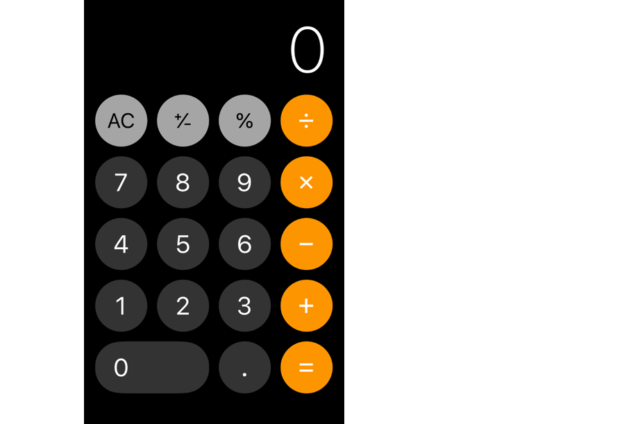
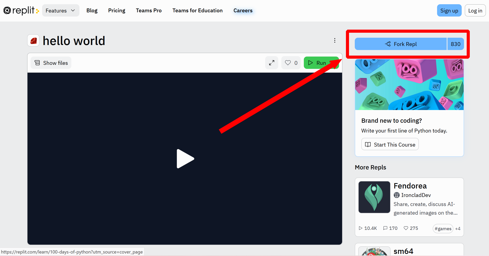

1.1 Nouns, verbs, and grammar
1.1.1 You already know how to program
Programming is the art of getting a computer to do useful things with information.
If you think about it that way, then you already know at least one programming language:

In the case of a calculator, the “information” is numbers and the “useful things” are adding, subtracting, multiplying, etc. Like any computer (or person), we get the calculator to do useful work by writing instructions that it can understand.
For example, if we press the keys 7 × 6 = (in that order), then the calculator will return 42 on the screen; but if we press the keys × 7 = 6, then it won’t.
- In the above example,
7and6are known as data, or as I think of it, nouns. xand=are known as methods, or as I think of it, verbs.- The order in which we press the keys is known as syntax, or as I think of it, grammar.
- Altogether, some data and some methods put together using correct syntax form an expression, or as I think of it, a sentence.
- Given a valid expression, the computer will process it and return a piece of useful data back to us.
A basic calculator’s entire vocabulary consists of the following:
Data
1 2 3 4 5 6 7 8 9 0 .
Methods
= + - × ÷ % ± AC
Syntax
There are only a few rules:
- Primary syntax: A number, then an operator, then another number, then the =.
- Numbers can contain a single decimal point.
- Numbers can be modified by the plus/minus sign.
- Numbers can be modified by the percentage sign.
- Can press AC to reset.
It’s a very small language, but it demonstrates the same parts as any other programming language: data, methods, and syntax.
Got it? Good, because that’s basically all that there is to any other programming language, too! It’s just that its vocabulary will be bigger, and it will have more grammar rules.
1.1.2 Ruby’s vocabulary
Let’s start learning your second programming language — Ruby! As we now know, that means we need to familiarize ourselves with Ruby’s data, methods, and the syntax for putting them together.
First of all, Ruby can work with many more kinds of data than just numbers. That’s what makes it much more powerful than the calculator language. Ruby has:
- Numbers
- Text
- Dates
- Times
- True/false
- Lists containing multiple pieces of data
- And a lot more
Each kind, or class, of data has its own set of methods that it can perform. For example:
- Numbers can do the usual things — add, subtract, multiply, etc.
- Two dates can tell you how far apart they are from one another.
- Lists can tell how you long they are, or sort themselves.
Ruby is known as a “batteries included” language because it comes with so many methods out-of-the-box, saving the programmer the trouble of having to re-invent the wheel.
Finally, we can even make up our own nouns and verbs and add them to the language. For example, we can create a data type Venue, give it a method that calculates the average rating from its reviews, and then use that method whenever we want.
One of the best things about Ruby is its wonderful open-source community: programmers very often share these new classes that they write with one another, making the language ever easier to use and ever more powerful.
1.1.3 Ruby’s primary syntax
So, in terms of data and methods, Ruby comes with a powerful set out-of-the-box and is always getting better. That’s good news! Here’s even more good news: to access all of this power, the primary syntax is straightforward. It looks like this: some_object.some_method
Here’s a real example:
"Hello, world!".upcase✏️ Exercise: You try it. Click here to visit repl.it, a service that offers instant programming sandboxes within your browser. Click the “Fork” button in the top right and sign in with your Github account. “Forking” a REPL will copy the REPL to your own account and allow you to edit it.
✏️ Exercise: You try it. Click here to visit repl.it, a service that offers instant programming sandboxes within your browser. Click the “Fork” button in the top right and sign in with your Github account. “Forking” a REPL will copy the REPL to your own account and allow you to edit it.

In the black window that appears on the right side under the >_ Console tab
This is a “command-line” or “terminal”. You enter text commands here by typing them out exactly, and the computer will execute them, similar to how you click on a program with your mouse to run it. You’ve already seen another terminal in your GitPod workspaces for running commands like bin/server and rails grade., type:
irband press return. This will launch interactive Ruby (IRB), a program that lets you evaluate one Ruby expression at a time.
At the irb(main) prompt that appears, you can now try out "Hello, world!".upcase:

If all went well, you should have seen => "HELLO, WORLD!" output by the command. Yay
It is a time-honored tradition that the very first thing a programmer does in a new language is print out “Hello, World!” Congratulations — you’re now one of us 🙌🏾! What just happened?
The primary way to write an expression in Ruby is: object.method. We ask the thing, or noun, on the left side of the dot to perform the action, or the verb, on the right side of the dot.
The computer then evaluates that expression and returns a new piece of data in its place (just like with the calculator).
In this case, we asked "Hello, world!", which is a string (Ruby’s name for a piece of text
The name “string” is used in pretty much every programming language for the datatype that holds a piece of text, and refers to a string of characters; a holdover from back when we used to have to worry about conserving the computer’s physical storage space and had a separate datatype for an individual character. Now we usually don’t have to worry about storage space anymore, but the name “string” stuck with us.), to upcase itself, which it (very) happily does, and we’re left with "HELLO, WORLD!" at the end of the day.
1.1.4 Every class has different methods
Different classes
Almost everything in Ruby is an object. That’s the idea behind object-oriented programming. Text like "Hello, world!" is an object — specifically a string class object. (string being one) can perform different methods. Here are a few expressions to try out. Type each one into IRB.
7.odd?
7.even?
"Mississippi".length
"Raghu Betina".reverse
"Your Name".swapcase✏️ Exercise: Click here for a REPL to try it.
What do you expect will happen if we ask "Mississippi" if it is even?? Try it:
"Mississippi".even?1.1.5 Error Messages
Do, or do not. There is no read.
When you saw the ✏️ Exercise: prompt, were you typing out every expression in a REPL?
If not, then you’re doing this wrong. If you’re just reading, you won’t be successful at learning programming; you have to do in order to build up some muscle memory. Practice is crucial.
In fact, not only should you be typing the things I ask you to type, but you should also be trying out random other things that occur to you. (E.g., “What if I tried "Mississippi".length.even?”)
Experiment!
Read. The. Error. Message. (A.k.a., “RTEM”)
Aha! If you were typing out every expression and running it, then
"Mississippi".even?should have produced your very first error message! 🎉
Error messages can look scary, but one of the most important skills you have to develop when learning to program is to not panic when you see them. Slow down, read the error message, and see if you can make any sense of it at all. Over time, you will find that they are very helpful (and you will miss them if something goes wrong silently).
So, what do you think
undefined method `even?' for "Mississippi":Stringmight mean?
In this case, it is saying: “Hey, friend — there’s no method called even? for "Mississippi", which is a String. Sorry.” Fair enough, that makes sense.
1.1.6 Arguments are inputs
Alright, so the primary syntax in Ruby is straightforward — object.method. However, there’s a wrinkle: some methods require additional inputs. For example, there is a method called gsub which we can call on a String, which will substitute characters with other characters. Try it:
"Java is a joy".gsub("Java", "Ruby")✏️ Exercise: Click here for a REPL to try it.
gsub is short for “globally substitute”, because it will replace all occurrences of one substring with another substring.
In order to do its job, the gsub method needs to know what substring to get rid of and what to replace it with. So we give it inputs, or arguments, which must come in parentheses immediately following the method. If the method takes multiple arguments, as gsub does, then they are separated by commas.
✏️ Exercise: Try replacing "Java is a joy" with any string you like, and experiment with different arguments instead of "Java" and "Ruby". For example, use gsub to change "Hello, world!" to say "Hello, you there!". Then, start with "resume" and try to transform it into "résumé". What is the purpose of gsub’s first argument, and what is the purpose of the second argument?
In reality, gsub is more often used to do things like removing illegal characters from usernames before saving, e.g.:
"Raghu@Bet@ina".gsub("@", "")("" is an empty string, so all @s will be replaced with nothing, i.e. removed.)
1.1.7 One of the only times when whitespace matters
Unlike some other languages (e.g. Python) where indentation and spacing can change the entire meaning of a program, Ruby is, generally, very permissive about how you use whitespace. You can usually use spacing according to your own taste, and Ruby will be able to make sense of your code.
So, for example, whether you have spaces between arguments doesn’t matter; these two are equivalent:
"Raghu@Bet@ina".gsub("@", "")
"Raghu@Bet@ina".gsub("@","")(The most common style is to have one space after each comma.)
However, one situation in which whitespace does matter has to do with the parentheses around arguments:
"Raghu@Bet@ina".gsub("@", "") # good
"Raghu@Bet@ina".gsub ("@", "") # bad!Can you spot the difference? Don’t put a space between the method and the opening parenthesis.
It’s a very easy mistake to make, so I just wanted to warn you early on so you that can begin developing good muscle memory. Try the bad version in your sandbox and see what the error message looks like:
✏️ Exercise: Click here for a REPL to try it.
1.1.8 Seriously: please read the error message
Programming boils down to:
- Forming a plan of what you want to do (e.g. “I want to remove any ’@’s in this input.”)
- Typing some code to try and do it.
- It never works the first time.
- Seeing an error message.
- Learning how to deal with that particular error message.
- The next time you encounter that error message, it will be vaguely familiar and it will take slightly less time to debug it.
- After you’ve encountered that error message for the 25th time, you will debug it instantly.
Your skill level as a programmer is essentially the number of error messages that you have encountered in the past and now recognize. So start paying attention to them now — we want to collect ’em all!
1.1.9 An aside: Code comments
Here’s a debate that will rage until the end of time: what do you call this symbol?
#Is it a number sign? Is it a pound sign? Is it a hashtag? Is it a waffle?
In this text, I’m going to refer to it as an octothorpe.
The octothorpe is used quite a bit in Ruby. You can see one important way in the example above, where I said # bad! after some offending code. That is known as a “code comment”. The Ruby interpreter, when it sees the #, will ignore it and everything that comes after it; allowing us to leave notes to ourselves and to each other. Use comments liberally.
Another nice trick is: when experimenting with some code and it’s not working, just comment it out and try a different approach on the next line. That way you can keep the old code around for reference without having to delete it, but it won’t break the program:
# "Raghu@Bet@ina".gsub ("@", "")
# The code above was throwing an error message,
# but I want to save it for reference as I try
# to debug, so I put a #-symbol before it.
# Now, let me see if this thing below fixes it
"Raghu@Bet@ina".gsub("@", "")1.1.10 Variables are boxes
Now that you’ve seen arguments, you know all there is to know about crafting expressions in Ruby. No kidding: object.method(arguments) is the vast majority of what we’ll be doing. That’s it.
However, so far we haven’t been doing much with the return value of each expression. We’ve just been reading it off the screen, and then dropping it on the ground. For example, try the following:
# "hello world".upcase
# "hello world".reverse✏️ Exercise: Click here for a REPL to try it. Did it work? Did you copy-paste and forget to remove the leading # symbol..?
We’re not really able to make any forward progress when we only perform one operation at a time. Programs get interesting only when we start to take the return value of one expression and feed it into the next method. That’s how we craft our own novel, useful applications from the basic building blocks of Ruby.
So: let’s start to store our return values for future reference, instead of dropping them on the ground. We do this using variables, or as I like to think of them, boxes. Let’s get our feet wet:
Type the following:
s = "hello world!".upcase
s✏️ Exercise: Click here for a REPL to try it.
This creates a box, labels it s, and stores the string "HELLO WORLD!" in it.
The variable assignment operator
The single equals sign, =, is called the variable assignment operator.
When I read
s = "hello world!".upcaseout loud, I say “the string hello world dot upcase is assigned to the variable s”. I read the right side first, because that’s how Ruby reads it too; it first evaluates the expression on the right side of the =, and then it stores the resulting value in the variable on the left.
✏️ Exercise: Using as many Ruby terms as you can (string, object, assign, etc.), read the following out loud (or maybe in your head if you’re in a quiet café): t = "I like Ruby".gsub("like", "love"). Carefully reading code with correct terminology is a great way to learn and spot error messages before they occur.
✏️ Exercise: Now add another line to the REPL,
s = "hello world!".upcase
s.reverse
sGreat! Now we’re making progress.
Storing the next return value
What would you expect to happen if you add a third line so that your program reads:
s = "hello world!".upcase
s.reverse
s.gsub("L", "Z")✏️ Exercise: Do it! Type the above code into your current REPL.
What do you think s contains now? Try it:
sDid it match your expectations?
Most Ruby methods don’t modify the object that they are called upon; they just return a modified copy. The original variable is untouched, so if we want to hold on to the new value then we better store that too. Type this:
s = "hello world!".upcase
t = s.reverse
u = t.gsub("L", "Z")
u✏️ Exercise: Do it! Type the above code into your current REPL.
Fortunately, we can create as many variables as we want.
Updating variables
It can get old coming up with different variable names for every step of the program. Instead, we usually want to re-use existing variables. We can throw away what we have in the box and put in something entirely different with the same assignment operator, =. Type this:
s = "hi"
s = 2.odd?
s✏️ Exercise: Do it! Type the above code into your current REPL.
We can even replace the value in the box with an updated version of the old value, because the expression on the right side of the assignment operator is evaluated before the assignment takes place. Type this:
s = "hello, world!"
s = s.capitalize
s = s.reverse
s✏️ Exercise: Do it! Type the above code into your current REPL.
That may look strange — how can we use s on the left side and the right side of the =?
But it’s because this is not the equals sign from math class; this is the variable assignment operator, and the right side is evaluated first until only a single value is left; and then that object is assigned into the box on the left (replacing whatever was there before).
So you will very often see something like this:
counter = counter + 1When we’re keeping track of e.g. how many times we’ve printed something out on the screen. We are taking the original value of counter, adding 1 to it, and then replacing the contents of counter with that new total.
Variable syntax
You may have noticed that the variable assignment syntax is a departure from the primary syntax of object.method. But we do it all day long, so we need to know it just as well. Our programs will end up looking like this (these are made-up method names, so this code won’t work):
storage_box_1 = "starting data".first_transformation
storage_box_2 = storage_box_1.second_step
storage_box_3 = storage_box_2.third_method.maybe_even("another", "one")
# etc for dozens or hundreds of linesFirst, the expression on the right side of the assignment operator will be evaluated until there are no methods left and there’s just a piece of data remaining.
Then, that value will be placed in the variable named on the left side of the assignment operator, which will be created if it doesn’t exist, or will have its value replaced if it does exist.
Most programs are just a long succession of statements where we do some work with object.method and store the result in some variable, then we do some more work on that variable and store the result in yet another variable, and a hundred steps later we’ve produced our final result and we display that to our user.
Variable naming rules
When you are choosing your variable names, there are some rules:
- Variable names can only contain lowercase letters (
a..z), numbers (0..9), and underscores (_) — they can’t contain spaces. - Variable names cannot begin with a number.
- Rubyists strive to choose descriptive variable names, no matter how long they are, so that it’s obvious to teammates what the contents are at a glance.
Please avoid naming your variables x, y, and z. Use underscores to separate words in multi-word variable names, since we can’t use spaces.
1.1.11 That’s it
That’s it for the fundamental grammar of Ruby!
storage_box = noun.verb(input1, input2)It’s not that much worse than the calculator language, is it? Of course, there’s a bit more syntax (like how to define our own nouns and verbs) that we need to learn, but for the most part, object.method is the bulk of what we do.
Now we need to spend some time expanding our vocabulary — what are the most commonly used data types in Ruby, and what are some of their methods? That’s coming up next.